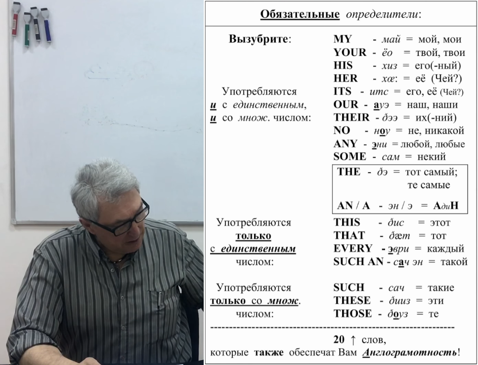
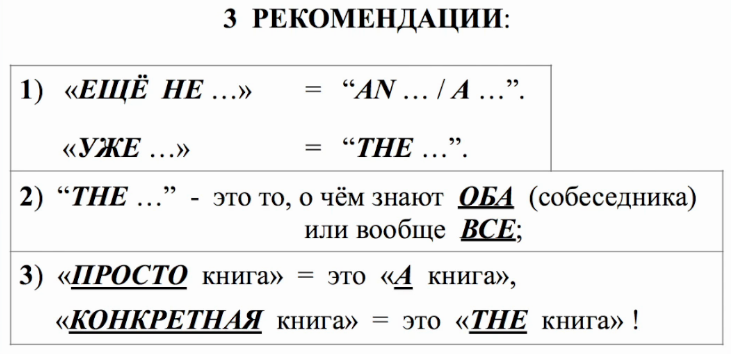
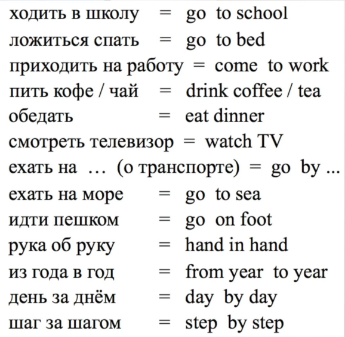

Что такое артикль? Откуда появилось само слово "article"? Что оно на самом деле обозначает?
Article - это редуцированное слово "particle", то есть "частица". Таким образом, с точки зрения лингвистики, артикль - это в первую очередь просто частица речи, и ничего более. Никаких волшебных свойств у нее нету. Как и в русском языке, в английском языке существует множество частиц речи, которые используются при образовании структуры предложения. Артикль - это просто одна из частиц речи, применение которой формирует структуру предложения.
Важно понимать, что артикль - это полноценное значимое слово. Не "вспомогательное", которое можно "проглотить", а значимое. Без артиклей речь звучит неграмотно, разорванно. Русскоговорящему человеку сложно это понять, но это так.
Значения артиклей следующие:
Чтобы подчеркнуть, что артикль - это значимое слово, имеющее вышеуказанное значение, можно привести такой пример. По-английски фраза "один миллион" будет звучать как "one million". Но с таким же успехом можно сказать "a million", и вас прекрасно поймут. Потому что значение артиклей An / A - вполне конкретное слово "один",
Ниже дана таблица, которую нужно вызубрить. Это базис (по Александру Драгункину).
Определитель - это нестандартный термин, введенный Драгункиным.
Перед каждым существительным должен стоять один из определителей. Поэтому эти определители назваются обязательными. Два определителя стоять перед существительным не могут (в 99% случаев). Если в предложении 10 существительных, значит будет 10 обязательных определителей.
Однако, есть исключения (тот самый 1 % случаев). Если существительное употребляется во множественном числе, то артикль An/A не ставится. А все потому, что этот артикль буквально обозначает слово "один". Нельзя сказать "один мальчики", "одна ложки" и т.д. Поэтому перед существительным во множественном числе артикль An/A не ставится. А вот артикль The перед множественным числом ставить можно.

При использовании артиклей можно пользоваться следующими рекомендациями:

Упражнение (в видео разбирается каждое предложение):
Результат данного упражнения должен получиться таким:
Вчера я ехал в a старом грязном автобусе. The автобус был переполнен. В the автобусе я встретил a старого друга. На the друге было a зеленое пальто. На the пальто была an огромная дыра. (На the пальто была a большая дыра). The дыра была зашита синими нитками (неопр. артикль не нужен так как мн. числ.). (The дыра была зашита a cиней ниткой). The нитки были старыми (опр. артикль ставится даже перед мн. числ.).
В a глухом дремучем лесу жил a нищий старик (нищие старики - нет неопр. артикля так как мн. числ.). Однажды the старик пошел в a темную чащу. За грибами (нет неопр. артикля так как мн. числ.). The грибы оказались вкусными. The старик сварил из the грибов a вкусный суп. Назавтра the суп скис. Тогда the старик снова пошел в the темную чащу. За новыми грибами. The новые грибы оказались червивыми.
Здесь все просто, за исключением двух последних предложений. Например, какой артикль будет в предложении "За новыми грибами"? Про грибы уже говорили. Но тут говорится про новые грибы. Нужно ли рассматривать эти новые грибы как грибы, о которых уже говорилось? Нет. В рассказ вводится новый объект "новые грибы", поэтому им нужно было бы дать артикль An/A. Но так как это множественное число, то артикль не ставится.
Еще в английском языке есть устойчивые выражения без артикля. Их нужно просто запомнить (зазубрить):

А так же, в английском языке есть устойчивые выражения с обязательным артиклем. Их тоже нужно просто запомнить (зазубрить):